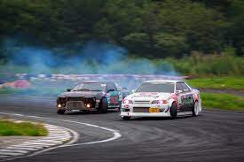

Существует два типа заездов: одиночные и парные. Победитель обычно определяется в нескольких заездах. В одиночных заездах судьи начисляют гонщику определённое количество очков в зависимости от скорости, траектории, угла заноса и зрелищности заезда в целом. В парных заездах первый участник должен проехать оцениваемый участок в соответствии с заданием (чаще всего по максимально правильной траектории), задачей второго участника является как можно сильнее приблизиться к своему сопернику во время движения в заносе, делать синхронные перекладки. Для определения победителя совершается два заезда, во втором заезде правила те же, но противники меняются местами. Победителем является тот пилот, который проехал ближе и лучше, будучи «догоняющим». Также, если оба заезда были безупречными или количество ошибок обоих пилотов суммарно одинаковое, судьи могут назначить повторный заезд.

Больше информации по ссылке (нажмите чтобы перейти)